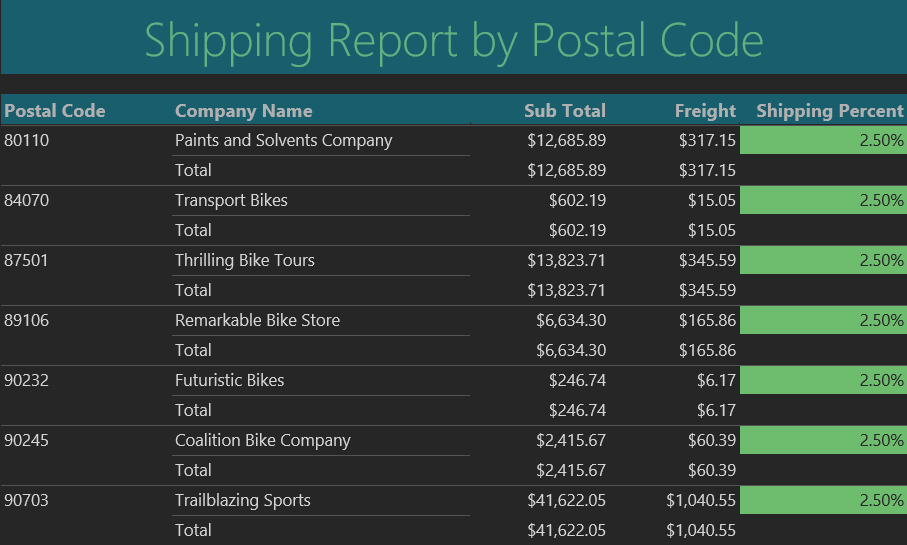
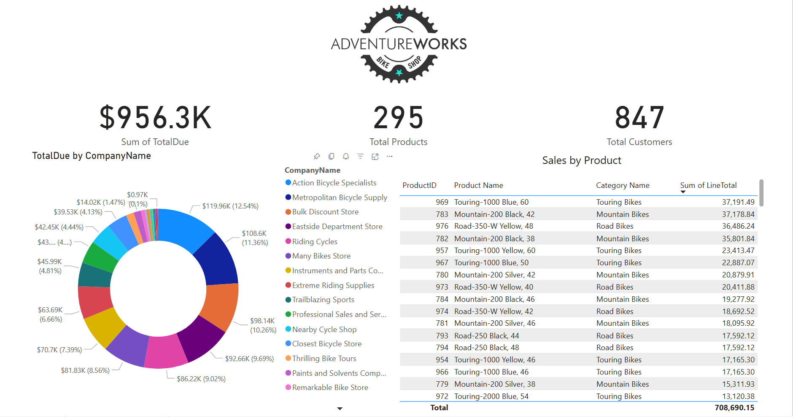
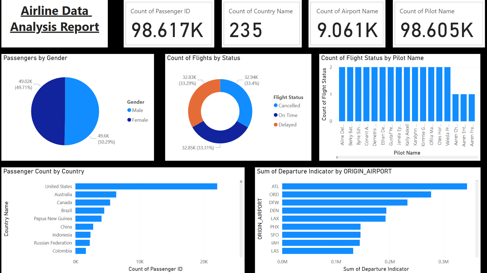

"Information is the oil of the 21st century, and analytics is the combustion engine."
— Peter Sondergaard
BI = Business Intelligence. Presenting useful information from a system's database is at the heart of any Information System. In this course we learned the basics of report writing utilizing SQL and basic report software like MS Access and MS Report Builder.

Some key takeaways I took from this course include:Online analytical processing, or OLAP, is an approach to answer multi-dimensional analytical (MDA) queries swiftly in computing. OLAP is part of the broader category of business intelligence, which also encompasses relational databases, report writing and data mining. In this course we were introduced to OLAP through Power BI.

Some key takeaways I took form this course include:Business intelligence (BI) comprises the strategies and technologies used by enterprises for the data analysis of business information. BI technologies provide historical, current, and predictive views of business operations. Visualizations are often incorporated into executive dashboards for optimal business decisions. In this course we were exposed to elements of Business Intelligence emphasizing visualizations.

Some key takeaways I took from this course include: